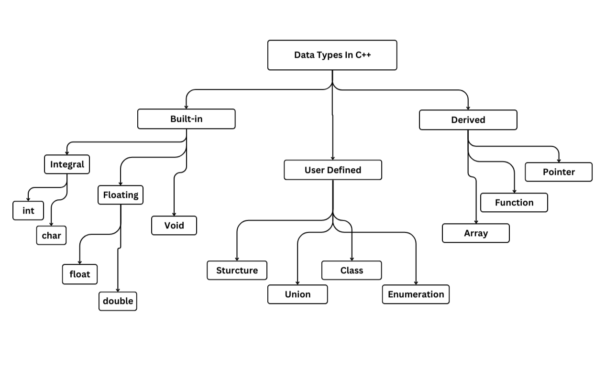

C++ was developed by Bjarne Stroustrup at Bell Labs during the early 1980s. It was designed to support the features of C such as efficiency & low-level support for system coding. New features added were classes with inheritance & virtual functions, were inspired from Simula67 language, & Operator overloading was inspired from Algol68. Described as superset of C, C++ has full support for object-oriented programming (OOPs).
To write any C++ Program, you need a text editor. Text editor allows you to create & modify text files (Notepad++, Sublime, etc). After writing the code we must make sure that it is error-free, this process is known as Compilation & Compiler is used to make sure that our code is error-free. It converts the code into machine understandable code (object code) & also displays syntax errors (if present) in the program.
C++ programs can be created using any text editor. Some systems like Visual Studio & Code::Blocks provide an integrated program development environment under different operating systems (like Windows, Linux). IDE Provides a built-in text editor & a compiler. C++ programs can be also compiled using command-line tools (like g++ & clang++).
#include <iostream> using namespace std; int main() { cout << "Hello, World."; return 0; }
Here the #include <iostream> in the program deals with including of header file (iostream is Input-Output Stream, also known as Preprocessor Directive) it is needed to support all built-in functions like cout (in this example), using namespace std; allows us to access elements from Standard C++ Library.
The the fourth line is the Main Function within the body of which you start writing the code for your program. Every C++ Program must include one & only one main function.
The code written between the curly braces { } is the program body, the 5th line will output the text enclosed in quotation marks ("") on the console. The sixth line return 0; is used to indicate that the program is executed successfully.
Hello, World.
The chart below shows various data types in C++,
Variables are used to store information/data. The data stored in a variable can be changed during program execution. In C++ all variables must be declared before use.
datatype variable_name;
#include <iostream> using namespace std; int main() { int myVar = 58; //Declares a variable named myVar & assigns integer value of 58 to it. return 0; }
Constants are declared with the "const" keyword, a type, their name, and an assignment of their constant value. This value must match the declared type, & its fixed (constant) for the duration of the programs.
#include <iostream> using namespace std; int main() { const int pie = 3.14; //Declares a constant named pie and assigns integer value of 3.14 to it. return 0; }
Welcome to the programming club! You finished learning the basics of C++!